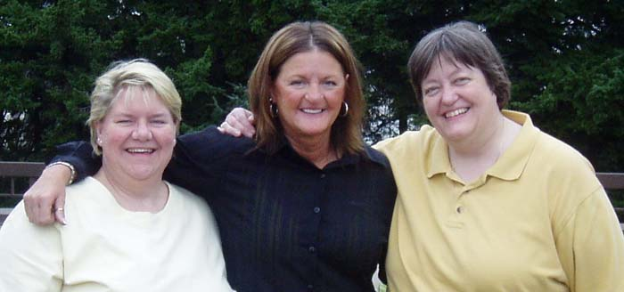

|
CLICK (gently!) on Granny's
|  |
to close this page.
|
Martha Draves was a lady with a hearing problem because of an early childhood illness. She could speak reasonably well, but needed sign language or written notes to "talk" with people. She lived common-law, and from this relationship, three children were born. Later, Martha broke up with her common-law partner and married. From this union, a fourth child, Daughter C, was born, making her a half-sister to Daughters A and B.
given up for adoption, died at 4 months of age. |
born in 1951 was adopted at 3 months of age. |
born in 1954 was adopted at 11 months of age. |
born in 1955 lived with relatives and foster parents. |
Janice, Daughter C, was not given out for adoption. However, when she was a year old, Janice stayed for a short time in the care of her mother's relatives, because the mother was involved in alcoholism and drifted away from the family. Janice then lived with her paternal grandparents until she was 15 years of age. She then went to live with her father, who, by this time had remarried. The arrangement did not work out, so Janice was placed with foster parents who treated her with love and kindness. At age 17, she opted to live on her own and worked at a bakery. At age 20 she married. Her Italian husband, Luciano Vecchies, a stone mason, works in Squamish, B.C. Janice is employed as an insurance broker with the Credit Union. Janice and Luciano have a son (Daniel), age 23, and a daughter (Sabrina), age 27. Sabrina is in her last semester of nurses' training.
Janice is the only one of the three girls who has seen the birth mother. Janice found her mother living in Nanaimo in 1997, but there were only a few visits between the two. In 2003, the mother, Martha, passed away. It is presumed that both fathers are also deceased.
In 1998, Daughter B - Jeannie DeWindt of Rocky Mountain House, AB - felt she would like to have some medical information about her biological parents. The social agency told Jeannie that she had a birth sister, and through many avenues of information, Jeannie found Daughter A - her birth sister - and a great relationship developed between the two since then. Jeannie and her husband operate a business related to oil field maintenance. They have two daughters: Holly, married to Trent, and they have two children. Krissy, the second daughter, has divorced from her husband; no children. They all live in Rocky Mountain House.
In 2005, Jeannie did more research on her biological family, and what do you know - she was told that there was ANOTHER sister! This sister - Janice - is a half-sister because she had a different father from the two other girls.
During Christmas week, 2005, the three sisters met together for the first time. Jeannie travelled from Rocky Mountain House; Janice travelled from Squamish, and where do you think they met?
who had been adopted by Fred and Viola Pahl!
Another astounding fact - Susan and Jeannie both have the same birth date - January 3!
As you will have noted, there is a three years difference between the two of them.
Do they look like sisters? Well, you can be the judge of that. But when you see them interacting together, they have, in some instances, similar mannerisms. Jeannie and Susan have the same "chins" and they share an odd "toe" formation. Susan and Janice have similar voices and facial expressions. Viola said to the girls, "Since you are all about the same age, you will have each other as you grow old together."
On the 31st of December, Gerhart and Penny came to White Rock to meet Janice (they had met Jeannie before), and we had a great time together. We celebrated Susan's and Jeannie's birthdays with a dinner and a big birthday cake. The families of Jeannie and Janice did not attend church, so these two siblings do not have a church background.

Now - don't you agree that the foregoing is a most unusual story?
|
CLICK (gently!) on Granny's
|
|
to close this page.
|